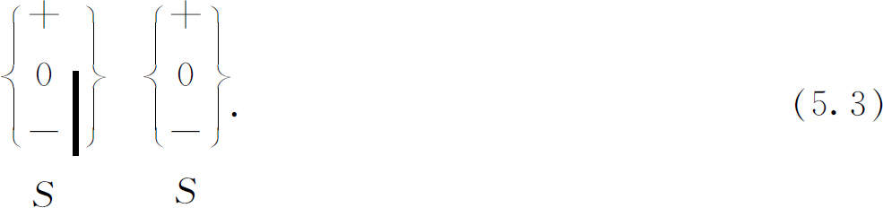
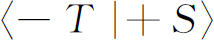
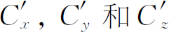

第5章 自旋1
§5-1 用施特恩-格拉赫装置过滤原子
本章我们才真正开始讨论量子力学本身——就是说我们将完全用量子力学方法来描述量子力学现象。我们并不想找出量子力学和经典力学之间的联系，也不为此而感到抱歉。我们要用新的语言来讲述某些新的事物。我们所要描述的特殊问题是自旋1
的粒子的所谓角动量量子化。但是要等到后面我们才使用经典力学的像“角动量”之类的术语或其他概念。我们之所以选择这一个特殊的例子是由于它比较简单，虽然它可能并不是最简单的例子。不过，它也还是足够复杂因而可作为一个范例，将它推广后就可以用来描写所有量子力学现象。因此，我们所处理的虽然只是一个特例，但我们提到的所有定律都可直接推广，我们将作出这种推广，从而使你们可看到量子力学描述的一般特性。我们从施特恩-格拉赫实验中一束原子会分裂成三束这个现象开始讨论。
你们记得，如果有一个带有尖端磁极的磁铁所产生的非均匀的磁场，我们使一原子射束穿过这个磁场，粒子束就会分裂成好几束——其数目取决于原子的种类和它所处的状态。我们要讨论能分裂成三束的原子，并把这种粒子称作自旋1
粒子。你们可以自己讨论五束、七束、两束等情况——只要把每一个步骤都重复一遍，在得到三项的地方，就得到了五项、七项等等。
想象这样的装置，其简图画在图5-1中。一束原子（或者任何种类的粒子）经过狭缝后成为准直射束，然后通过非均匀磁场，我们设此射束沿y
方向运动，磁场和磁场梯度都沿z
方向。从侧面观察，我们将看到射束竖直地分裂成为三束，如图所示。在磁铁的输出端可以放置一个小小的计数器，用来计算三射束中的任意一束的到达率。或者我们也可以挡住两束射束而只让第三束通过。
图5-1 在施特恩-格拉赫实验中，自旋为1的原子分裂成三束
假设我们挡住下面两个射束，只让最上面的那一束通过并使它进入第二台同样的施特恩-格拉赫装置，如图5-2所示。这时将发生什么情况呢？在第二台装置中不再
出现三射束，而只有最上面的一束
(1)
。如果你认为第二台装置只是第一台装置的延伸，这个结果将正是你所预期的。那些被向上推的原子在第二台装置中继续被向上推。
于是你们看到，第一台装置产生了一束“纯化了的”原子——在特殊的非均匀磁场中向上偏转的原子。进入第一台施特恩-格拉赫装置的原子有三“种”，这三种原子采取不同的轨道。留下其中的一种，其他两种都被滤掉后，我们获得了这样一束射束，它以后在同样的装置中的行为是确定的并且是可以预言的。我们称它为滤过
射束，或者极化
射束，或者已知其中所有原子都处于某一确定状态
的射束。
在下面的讨论中，如果我们考虑经过某些修改的施特恩-格拉赫型装置将更为方便。虽然这种装置初看上去比较复杂，但它会使所有论证比较简单。不管怎样，既然这只是“理想实验”，把仪器弄得复杂一点并不需要花费什么东西。（附带提一下，从来没有人做过我们这种方式描写的每一个实验，但是我们从量子力学定理可以知道必定会
发生些什么事，当然这些定理是建立在其他类似的实验基础上的。这些其他的实验在初学时比较难以理解，所以我们要叙述一些理想的——但却是可能的——实验。）
图5-3（a）是我们想要用的、“改装过的施特恩-格拉赫仪器”的简图，它包括一串三个高磁场强度梯度的磁铁，第一个（左边的）就是通常的施特恩-格拉赫磁铁，它把一束入射的自旋1的粒子射束分开成三束。第二个磁铁和第一个磁铁有同样的截面，但是有第一个的两倍长，并且它的磁场的极性和第一个磁铁的磁场极性相反。第二个磁铁把原子磁体推向相反的方向，使其路线向轴线弯曲，如图5-3（b）中的轨迹所示。第三个磁铁和第一个完全一样，它使三束射束重新聚合在一起。从沿着轴线上的出射孔射出去。最后，我们想象在小孔A
的前面有某种机构，它能使原子从静止开始运动，而在出射孔B
的后面有一个减速机构，它使原子在B
处回到静止状态。虽然这些并不是必不可少的，但是这意味着在分析过程中我们可以不必考虑任何像原子射出等等这样的一些运动效应，而把注意力集中于只和自旋有关的现象上。“改进”的装置的全部目的仅仅在于使所有的粒子都来到同一地点而且速度为零。
图5-3 （a）施特恩-格拉赫装置的一个改装设想；（b）自旋1的原子的路径
现在如果我们要做一个如图5-2所示的实验，我们可以在装置的中央放上一块挡板以挡住射束中的两束从而获得一束滤过射束，如图5-4所示。如果我们使这些极化原子穿过第二台同样的装置，所有原子都将采取上面的一条路线。这可以将同样的挡板放在第二个S过滤器中各射束的通道上，并观察粒子是否通过来证明。
图5-4 “改进的”施特恩-格拉赫装置作为一个过滤器
假设我们把第一台装置称作S
。（我们将要考虑各种可能的组合，为使条理清楚需对各台装置加上标记。）我们说在S
中采取上面一条路线的原子是处在“相对于S
为正的状态”中，采取中间一条路线的原子是处于“相对于S
为零的状态”中，采取下面一条路线的原子是处在“相对于S
为负的状态”之中。（用较为常用的语言，我们说角动量的z
分量是
， ，但是我们现在不用这种术语。）在图5-4中，第二台装置的取向和第一台相同，所以经第一台装置滤过的原子进入后都将走上面的那条路线。或者如果我们挡住第一台装置中上面的和下面的射束，而只让零态原子通过，所有滤过原子都将通过第二台装置中间的那条路线。如果在第一台装置中，除了最低的那一束射束外，其余两束都被挡住，于是在第二台装置中只有下面的一束射束。我们可以说，在上述各种情况中，第一台装置产生了一束相对于S
而言（＋，0或－）处于纯粹状态中的滤过射束，我们可以使射束通过第二台同样的装置以检验其中原子所处的状态。
，但是我们现在不用这种术语。）在图5-4中，第二台装置的取向和第一台相同，所以经第一台装置滤过的原子进入后都将走上面的那条路线。或者如果我们挡住第一台装置中上面的和下面的射束，而只让零态原子通过，所有滤过原子都将通过第二台装置中间的那条路线。如果在第一台装置中，除了最低的那一束射束外，其余两束都被挡住，于是在第二台装置中只有下面的一束射束。我们可以说，在上述各种情况中，第一台装置产生了一束相对于S
而言（＋，0或－）处于纯粹状态中的滤过射束，我们可以使射束通过第二台同样的装置以检验其中原子所处的状态。
我们可以这样安排第二台装置，使它只让某种特殊状态的原子通过——就像第一台装置那样，在其中放上挡板——那么我们只要看一看是否有什么东西从远端出来，就可以检验出入射射束的状态。举例说，如果我们挡住第二台装置中下面的两条路线，结果百分之百的原子都能通过，但如果我们挡住上面的路线，那么一个原子也通不过。
为使讨论容易起见，我们发明一种速记符号来表示改进的施特恩-格拉赫装置。我们用下面的符号
代表一台完整的装置。（这并不是
你们通常所看到的在量子力学中用的符号，它是我们为这一章的方便而发明的，它只是图5-3中的装置的速写符号。）因为下面我们想要同时使用好几台装置，这些装置有不同的取向，我们就在每一个符号下面写上一个字母以资识别。所以式（5.1）中的符号代表装置S
。当我们挡住其中的一束或几束粒子时，我们就用一条垂直的杠杠来表示哪一束粒子被挡住了，如：
图5-5表示我们将要使用的各种可能的组合。
如果我们接连放置两个过滤器（如图5-4所示），我们就将两个符号紧接在一起，像这样：

对于这样的装置，通过第一台的各种粒子也都能通过第二台。实际上，即使我们挡住第二台装置中的“零”和“负”通道也没什么关系，从而我们有
我们仍旧得到穿过第二台装置的透射粒子为百分之百。另一方面，如果我们有
那么远端连一个原子都不会出来。同样，
什么都不出来。另外，
等效于
现在我们要用量子力学来描写这些实验。如果原子通过图5-5（b）的装置，我们说该原子处在（＋S
）态中，如果原子通过（c
），就处在（0S
）态中，如果通过（d），就处在（－S
）态
(2)
。我们令〈b
|a
〉是处于状态a
的原子通过装置后状态变为b
的振幅
。我们也可以说：〈b
|a
〉是在
状态a
中的原子进入
状态b
的振幅。实验（5.4）给出：
而式（5．5）给出：
同样，式（5．6）的结果是：
式（5．7）的结果是：
只要我们处理的是“纯粹的”状态——即我们只打开一条通道——就有9个这样的振幅，我们可以把它们列在一张表格里面：
这9个数字的排列——叫做矩阵
——概括了我们以上所述的现象。
§5-2 过滤原子的实验
现在讨论一个重要的问题：如果使第二台装置倾侧一个角度，因而其场的轴线不再和第一台场的轴线相平行，这将会发生些什么现象呢？第二台装置不仅可以倾侧，而且还可以指向另一方向——例如可以使射束相对于原来的方向转过90°。为方便起见，我们先考虑一种安排，其中第二个施特恩-格拉赫实验装置绕y
轴转过一个角度α
，如图5-6所示。我们称第二台装置为T
，假定我们现在做下面的实验：
或者做这样的实验：
在这些情况下，从远端出来的是些什么呢？
答案如下：假定原子相对于S
处在一个确定的状态中，它们对于T
就不是处在这一状态中——（＋S
）态并不就是（＋T
）态。然而，发现原子在（＋T
）态——或者（0T
）态，或者（－T
）态——都有一定的振幅。
换言之，尽管我们像已经做过的那样仔细地查明了所有的原子都处在确定状态，但实际情况却是当原子通过一台转过一定角度的装置时，它不得不“重新取向”——不要忘记，这个“重新取向”是凭运气的。我们可以使一次只有一个粒子通过，于是我们只能提出这样的问题：它通过的概率是什么？通过S
的原子有些将进入（＋T
）态，有些将进入（0T
）态，还有一些将进入（－T
）态——都各有各的可能性。这种可能性可以由复数振幅绝对值的平方求得，我们需要的是表示这种振幅的一些数学方法或量子力学描述。我们所需要知道的是像

之类的各种量，它表示原来在（＋S
）态的原子进入（－T
）态的振幅（除非T
和S
平行排列否则这个振幅不等于零）。还有另一些振幅，如
事实上有9个这样的振幅——另一个矩阵——粒子的理论应当告诉我们怎样计算它们。正如F＝ma
告诉我们怎样计算一个经典粒子在任何情况下的运动状态一样，量子力学定律使我们可以决定粒子通过某个特定装置的振幅。于是，中心问题是要能够——对于任意给定的倾角α
，实际上就是对于无论什么取向——求出9个振幅：
图5-6 两个串联的施特恩-格拉赫型的过滤器，第二台相对第一台倾侧一角度α
我们已能得出这些振幅之间的一些关系。第一，按照我们的定义，绝对值的平方
是（＋S
）态的原子进入（＋T
）态的概率
。我们经常发现把这个平方数写成下列等效形式更为方便：
用同样的记号，数值
是在（＋S
）态中的原子进入（0T
）态的概率，以及
是原子进入（－T
）态的概率。但是我们的装置做成这样，凡是进入T
装置的每一个原子一定在T
装置的3个状态中的某
一个状态中被发现——对于给定的这种原子没有别的地方可去，所以我们刚才写的3个概率的总和必定等于百分之百。我们得到下面的关系式：
当然，如果从（0S
）或（－S
）出发，我们可以得到另外两个类似的方程。这些都是我们能够很容易得到的方程，下面我们将继续讨论另一些普遍的问题。
§5-3 串联施特恩-格拉赫过滤器
这是一个有趣的问题：假设原子经过过滤成为（＋S
）态，然后我们将这些原子送入第二个过滤器，使之成为（0T
）态，然后再通过另一个
＋S
过滤器。（我们称这最后一个过滤器为S
′，这样我们就可把它和第一个S
过滤器相区别。）原子是否还记得它们曾经处在（＋S
）态中呢？换句话说就是我们做下面的实验：
我们想要知道是否所有通过T
的原子也都通过S
′。它们并不是如此
，它们一经被T
过滤后，就丝毫不记得
在它们进入T
以前曾经处在（＋S
）态中。注意，（5.11）中的第二台S
装置的取向和第一台S
装置的取向完全一样，所以它仍旧是S
型过滤器。被S
′过滤后的状态当然也是（＋S
），（0S
）和（－S
）。
这里的要点是，假如T
过滤器只能通过一束原子
，通过第二台S
过滤器的原子占进入这一台S
过滤器原子总数的比例
只取决于T
过滤器，而与在T
前面是些什么完全无关。相同的一些原子曾被S
过滤器分类这个事实对它们被T
过滤器再一次分类成为纯粹射束后的行为丝毫没有影响。它们此后进入不同状态的概率与进入T
仪器之前的经历完全无关。
作为一个例子，我们把实验（5.11）和下面的实验相比较：
其中只有第一个S
改变了。设（S
和T
之间的）角度α
的大小正好使得（5.11）实验中通过T
的原子有三分之一也能通过S
′。在实验（5.12）中，虽然一般说来通过T
的原子数有所不同，但其中仍然有同样的一部分
——三分之一——将通过S
′。
事实上，从以前已学过的东西我们就可证明，从T
出来并且通过任一特定S
′的原子的比例只取决于T
和S
′而与在这以前所发生的任何事情无关。我们来把实验（5.12）和
比较一下。在（5.12）的实验中，原子从S
出来并且也能通过T
和S
′两者的振幅是：
相应的概率是：
实验（5.13）的概率是：
它们的比例是：
它只取决于T
和S
′，而与S
所选择的射束是（＋S
）还是（0S
）或是（－S
）毫无关系。（绝对数随通过T
的原子数目多少而一起增减。）当然，如果我们比较进入S
′的正的或负的状态的概率，或者求进入零或负的状态的概率的比值，我们会得到同样的结果。
事实上，由于这些比值只取决于被允许通过T
的是哪一束射束而与第一台S
过滤器所作的选择无关，显然，甚至最后的装置不是S
过滤器我们也会得到同样的结果。如果我们所用的第三台装置——我们现在称它为R
——相对于T
转过一个任意的角度，我们将会发现，像|〈0R
|0T
〉|2
／|〈＋R
|0T
〉|2
这样的比例不依赖于第一台过滤器S
中通过的是哪一束射线。
§5-4 基础态
以上的结果说明了量子力学的一条基本原理：任何原子体系都可以通过过滤将其分解为某一组所谓的基础态
，在任一给定的基础态中，原子未来的行为只依赖于基础态的性质——而与其以前的任何历史无关
(3)
。当然，基础态取决于所采用的过滤器，例如（＋T
），（0T
）和（－T
）这3个状态是一组基础态，（＋S
），（0S
）和（－S
）3个状态是另一组基础态。完全可以有许多种可能性，每一种都和其他的一样合适。
当我们说正在考虑的是的确能产生“纯粹”射束的优良
过滤器时，我们须加小心。如果我们的施特恩-格拉赫装置不能把3束射束很好地分开，那么我们就不能用挡板把它们不含糊地分开，这样我们就不可能完全地分出各基础态。通过观察射束在另一个同类的过滤器中是否再进一步分裂，我们就能够确定是否得到了纯粹的基础态。例如，假设我们得到的射束是纯粹的（＋T
）态，那么所有原子都会通过：
而没有原子能通过
也不能通过
我们对基础态的陈述意味着射束有可能
被过滤成某种纯粹的状态，以致用同样的仪器不可能再有进一步的过滤。
还必须指出，我们所说的只对颇为理想的情况才严格地正确。在任何实际的施特恩-格拉赫装置中，我们必须考虑狭缝的衍射，这会使某些原子进入对应于别的角度的状态，或者考虑射束中是否包含不同的内部激发状态的原子，等等。我们已把情况理想化了，因此所谈的只是在磁场中分裂的状态，对于与位置、动量、内部激发等有关的事情我们都忽略了。一般说来，我们还必须考虑按照这些性质分类的基础态。但是，为了保持概念简单，我们只考虑上面所说的包含三个状态的基础态组，这对于理想情况的严格处理已足够了，在这理想情况中，原子通过仪器时不会被破坏，也不会受到严重干扰，并且离开装置后就停止下来。
你们会注意到，我们开始理想实验时总是用一台只打开一条通道的过滤器，以使我们从某一确定的基础态出发。之所以这样做是因为从炉子里出来的原子具有各种状态。这些状态是由炉子中偶然发生的过程随意决定的。（它给出所谓“非极化”射束。）这种无规性包含了“经典”型的概率——类似于抛掷硬币——而与我们现在所讨论的量子力学概率不同。处理非极化的射束会使我们陷入更为复杂的情况，我们最好是避开它，一直到我们了解了极化射束的行为以后。所以现在不去考虑如果第一台
装置可以让一束以上的射束通过时会发生些什么。（在本章的末了会告诉你们怎样处理这类情况。）
我们现在回过头来看一看，当从一台过滤器的一个基础态变为另一台不同的过滤器的一个基础态时，会发生些什么？假如我们还是从
出发。从T
出射的原子是处于基础态（0T
），这些原子已忘记了它们曾经处于（＋S
）态中。有人会说，原子被T
过滤时，“失去”关于以前状态（＋S
）的信息，因为当我们在装置T中把原子分解成三束时，我们“扰乱了”它们。但这是不正确的。关于过去的信息并不是由于将原子分解
成三束而失去的，而是由于放进去的挡板
——这一点我们从下面的一组实验可以看出。
我们从＋S
过滤器出发，并将从这个过滤器出射的原子数记作N
。如果在它的后面接着放置一个0T
过滤器，从这后一过滤器出射的原子数目是原来的原子数的一部分，令其为α
N
。如果我们再放上一个＋S
过滤器，只有这些原子中的一部分β
可以从远端出射。我们可用下列方式来表示这一过程：
如果第三台装置S
′选择另一个不同的状态，譬如说（0S
）态，出射原子的比例就不同了，譬如这个比数是γ
。
(4)
我们有：
现在假定我们重复这两个实验，不过把T
的所有挡板都去掉。于是我们得到引人注意的结果如下：
在第一种情况下，所有的原子都能通过S
′，可是在第二种情况下，一个原子也没有
通过！这是量子力学的主要定律之一。自然界按照这种方式行动并不是不证自明的，但是从我们的理想实验所得到的结果就是从无数实验中观察到的量子力学行为。
§5-5 干涉的振幅
从实验（5.15）变为实验（5.17）——打开更多的通道
——通过的原子怎么反而更少了呢？这是量子力学的一个很老而又深奥的问题——振幅的干涉。它和我们在最初的电子双缝干涉实验中所观察到的现象属于同一类。在那里，我们曾经看到：到达某些地点的电子在两个狭缝都打开时可以比只打开一个狭缝时少。在定量上是按下述方式处理的，我们可以把原子通过（5.17）装置中T
和S
′的振幅写成三个振幅之和，每一个振幅相当于T
中的一束射束，其总和等于零：
这三个振幅没有一个等于零——例如，第二个振幅的绝对值的平方等于γα
，见实验（5.15）——可是三项的总和为零
。如果把S
′安装成选择（－S
）态，我们会得到同样的结果。然而，在（5.16）的装置中，答案就不同了。如果令a
为通过T
和S
′的振幅，则在此情况下，我们有
(5)
：
在实验（5.16）中，一射束被分解又被重新组合。打碎的蛋又复原了。关于原来（＋S
）态的信息仍被保留下来——就像T
仪器完全不存在一样。无论把什么接在“敞开的”T
装置后面都是这个样子。我们可以在它后面接一个R
过滤器——转过其他角度的过滤器——或者其他任何东西，答案总是与原子从第一台S过滤器直接过来一样。
这是一个重要的原理：一个挡板敞开的T
过滤器——或者任何一种过滤器——没有引起任何改变。我们还要附加一个条件。敞开的过滤器不仅能够让3束射束都通过，而且对于3束射束不产生不相等的扰动。例如，不能使一束射束近旁有很强的电场而在另一束附近却没有。理由是：即使这个额外的扰动仍旧让所有的原子都通过过滤器，但它可以改变某些振幅的相位
，那么干涉将发生变化，式（5.18）和（5.19）中的振幅也会不同。我们始终假设没有这类额外的扰动。
让我们用改进的符号把式（5.18）和（5.19）重写一下。用i
代表3个状态（＋T
）、（0T
）和（－T
）中的任一个，于是方程式就可以写成：
以及
同样地，对于用完全任意的过滤器R
代替S
′的实验，我们有：
其结果总是和T
仪器被省去时一样，只有
或者，用数学公式表示，
这是一个基本定律，并且只要i
代表任何过滤器的3个基础态，它便是普遍正确的。
你们要注意，在实验（5.22）中，S
和R
与T
并没有特殊的关系。而且，不论它们选择的是什么态，论证都是同样的。为了把这个方程写成普遍的形式，不必涉及S
和R
所选择的特定的状态，我们称φ
（“phi”）为第一个过滤器所准备的状态（在我们特定的例子中是＋S
态），χ
（“khi”）是最后一个过滤器所检验的状态（在我们的例子中是＋R
）。于是我们可把基本定律式（5.23）用下面的形式来表述：
其中i
遍及于某一特定过滤器的3个基础态。
我们要再次强调基础态的意义。它们像可以用我们的施特恩-格拉赫装置的任何一台来选择的3个状态那样。基础态的一个条件是：如果有了一个基础态，那么未来就不取决于过去。另一个条件是，假如有了一组完全的基础态，式（5.24）对于任何一组初态φ
和末态χ
都是正确的。然而，基础态组并不是
唯一的。我们是从考虑对于特定的装置T
的基础态开始的。如果考虑对于S
或对于R
或其他
(6)
装置的另一组
基础态也同样有效。我们通常说“在某个表象中的”基础态。
在任一特定表象中的一组基础态的另一个条件是：它们都是完全不相同的。这意思是说：如果原子在（＋T
）态它就不会有进入（0T
）或（－T
）态的振幅。如果我们用i
和j
来代表特定的一组基础态中的两个基础态，当i
和j
不相等时从（5.8）式有关的讨论中可以得到的普遍规律是：
当然，我们知道：
通常将这两个方程写成：
其中δji
（“克罗内克符号”）是一个符号，当i
≠j
时，它定义为零，当i
＝j
时则定义为1。
式（5.25）并非与我们所讲过的其他的定律相独立。我们现在对于寻找这样一个数学问题，即寻找可以把所有的定律作为其推论的最少的一组独立的公理，并没有特殊的兴趣
(7)
。只要我们有一组完全的无明显矛盾的基础态，我们就感到满意了。然而我们可证明：式（5.25）和（5.24）不是互相独立的。我们令式（5.24）的φ
表示与i
同一组基础态中的某一个基础态，譬如说第j
个基础态，那么我们就得到：
但是式（5.25）告诉我们，除非i
＝j
，否则〈i
|j
〉等于零。所以求和变成只有〈χ
|j
〉一项，于是我们得到一个恒等式，这就证明了两个定律不是互相独立的。
我们可看出，如果式（5.10）和（5.24）都是正确的话，振幅之间必定还有另外一个关系。式（5.10）为
如果式（5.24）中的φ
和χ
都是（＋S
）态，那么其左边就是〈＋S
|＋S
〉，显然它等于1，于是我们再一次得到式（5.19），
只有满足下列方程式时，上面两个式子才是一致的（对于装置T
和S
的所有相对取向）
由此，对于任意的状态φ
和χ
：
假如这个式子不正确，概率就不会“守恒”，粒子就会“丢失”。
在继续讨论之前，我们把有关振幅的三条重要的普遍定律总结一下，这就是式（5.24），（5.25）和（5.26）：
在这些方程式里i
和j
代表某一
表象的所有
基础态，而φ
和χ
代表原子的任何可能状态。必须注意，Ⅱ式只对遍及体系的所有
基础态（在我们的情况中是3个：＋T
，0T
，－T
）求和时才成立。关于怎样选择我们的基础态组的各个基础态，以上这些定律一点也没有谈到。我们从应用装置T
开始，这是一个有任意选定的某种取向的施特恩-格拉赫实验装置，但任意别的取向，譬如W
（装置），也同样适用。我们也可把另一组不同的状态作为i
和j
，而所有的定律仍然适用——基础态组的选择并不是唯一的。量子力学的主要策略之一就是利用事物都可以用一种以上的方法来计算这个事实。
§5-6 量子力学的处理方法
我们来证明为什么这些定律是有用的。假设我们有一个处于给定状态中的原子（这就是说该原子是以某种方法制备的），我们想要知道它在某个实验中的行为。换句话说，开始时原子处于状态φ
中，我们想知道该原子通过只能接受在满足条件χ
的原子的装置的可能性
。量子力学定律表明，我们可以用3个复数〈χ
|i
〉完全地描写仪器，这3个复数就是各个基础态在状态χ
中的振幅。如果我们用3个数字〈i
|φ
〉（即分别在3个基础态的每一个态中找到初始状态原子的振幅）来描写原子的状态，我们就能说出，该原子被放进装置后会发生些什么变化。这是一个重要的概念。
我们来考虑另一个例子。考虑下面这个问题：我们从一台S
装置开始，接着放上一个极其复杂的装置，我们称它为A
，后面再接上一台装置R
——就像这样：
A指的是任何施特恩-格拉赫装置的复杂组合，其中有挡板或半挡板，具有特定角度的取向，额外的电场和磁场……几乎有你想要放进去的任何东西。（做理想实验是很有方便的——不必费心去真实地建立
这样一台装置！）于是我们的问题是：进入A
的一个（＋S
）态粒子从A出来时处于（0R
）态，从而它能通过最后的那个R
过滤器，这个过程的振幅是什么？对于这样的振幅，有一个习惯的记法，它就是：
它照例从右读到左（像希伯来文那样）：
〈终结｜经过｜开始〉．
如果A
正巧不起任何作用——只是一条打开的通道——于是我们写成
这两个符号是等效的。对于更为一般的问题，我们可以用一般的起始状态φ
代替（＋S
），以及用一般的终了状态χ
代替（0R
），我们想要知道的是振幅
对于装置A
的完整的分析必定给出对每一对初态φ
和终态χ
的振幅〈χ
|A
|φ
〉——共有无穷多个组合！怎样才能对装置A
的行为作出一个简明的描述呢？我们可以采用下面的方法。设想把式（5.28）的装置仪器改为：
实际上根本没有改变，因为完全开放的装置T
不起任何作用。但是它能启发我们如何来分析这个问题。原子从S
进入T
的i
状态有一组振幅〈i
|＋S
〉。于是有另一组的状态i
（对于T
）进入A
而以状态j
（对于T
）出来的振幅。最后，有一个每一个j
态通过最后一个过滤器成为（0R
）态的振幅。对于每一条可能的路径，有一个振幅，其形式为
总振幅为从各种可能的i
和j
的组合所得出的各项之和。我们所要求的振幅就是：
如果（0R
）和（＋S
）用一般的状态χ
和φ
来代替，我们可得到同样类型的表达式，于是我们得到普遍的结果：
注意式（5.32）的右边实际上比左边简单。这里装置A
完全可以用9
个数字〈j
|A
|i
〉描述，这9个数字表示A
对装置T
的3个基础态的响应。只要我们知道这9个数字，并且把入射和出射状态φ
和χ
分别用进入3个基础态或从3个基础态出来的3个振幅来予以定义，我们就能够处理任何两个入射和出射状态φ
和χ
。实验结果可以用式（5.32）来预言。
这就是对于自旋为1的粒子的量子力学处理方法机理。每一个状态
可以用3个数字来描写，这3个数是对于某一组选定的基础态的每一基础态中的振幅。每一装置可以用9个数字来描写，这9个数字是装置中从一个基础态进入另一个基础态的振幅。任何结论都可以从这些数字计算出来。
描写仪器的9个数字常常写成方阵的形式——叫做矩阵〈j
|A
|i
〉：
量子力学的数学只是这个概念的推广。我们将给出一个简单的例证。假设有一台我们要进行分析的装置C
——就是说我们要计算各个〈j
|C
|i
〉。例如我们想要知道在像下面这样的实验里发生些什么：
但是后来我们注意到C
是由A
和B
两台装置串联组成——粒子先通过A
然后通过B
——所以我们可以用符号写出
我们可以把装置C
叫做A
和B
的“乘积”。我们还要假设已经知道怎样来分析这两个部分，所以我们可以写出A
和B
（对于T
）的矩阵。我们的问题就这样解决了。对于任何入射和出射状态，我们很容易求出
我们首先写下
你们看得出这样写的理由吗？（提示：设想在A
和B
之间放进一个装置T
。）如果我们考虑一个特殊情况，φ
和χ
也是（T
的）基础态，譬如说是i
和j
，我们得到
这个方程式给出以装置A
和B
的两个矩阵表示的“乘积”装置C
的矩阵。数学家们把新的矩阵〈j
|C
|i
〉——由两个矩阵〈j
|B
|i
〉和〈j
|A
|i
〉按照式（5.36）所表示的方式求和得出的——称为两个矩阵A
和B
的“乘积”矩阵BA
。（注意：次序
很重要，AB
≠BA
。）因此，我们可以说：两台串接的装置的矩阵等于这两台装置的矩阵的矩阵乘积（把第一台
装置放在乘积的右边）。知道矩阵代数的每一个人都懂得这就是式（5.36）。
§5-7 变换到不同的基
我们要提出有关计算时所用的基础态的最后一个问题。假定我们已经选用某一特定的基——譬如说S
基——而另一个人决定采用不同的基——譬如说T
基——进行同一计算。为明确起见，把我们所用的基础态称做（iS
）态，其中i
＝＋，0，－。同样我们可以称他所用的基础态为（jT
）。怎样把我们的工作和他的工作进行比较呢？任何测量结果的最后答案应该相同，但是在计算过程中所用的各个振幅和矩阵却是不同的，两者的关系是怎样的呢？如果大家都从同样的初态φ
出发，我们将用3个振幅〈iS
|φ
〉来描写它，这个式子表示φ
在S
表象中分解为基础态，而他却用振幅〈jT
|φ
〉来描写它，这表示φ
分解为他所用的T
表象的基础态。怎样证明大家所描写的实际上都是同一状态φ
呢？我们可以应用式（5.27）的普遍定律Ⅱ来证明。用他的任意一个状态jT
来代替χ
，我们得到：
为了把两个表象联系起来，我们只要给出矩阵〈jT
|iS
〉的9个复数。于是用这个矩阵就可以把我们的所有方程式转换为他所用的形式。它告诉我们怎么从一组基础态变换
为另一组基础态。（因这个理由，〈jT
|iS
〉有时称为“从S
表象到T
表象的变换矩阵”。好长的名词！）
对于自旋为1的粒子的情形，我们只有3个基础态（对于更高的自旋，就有更多的基础态），其数学运算和我们在矢量代数中所见过的很相似。每一个矢量可以用3个数来表示——沿x
，y
和z
轴的分量。这就是说每一个矢量可以分解为3个“基础”矢量，这些“基础”矢量是沿着3个坐标轴的矢量。但是假如另一人选择另一组坐标系——x
′，y
′和z
′，他就将用3个不同的数字来代表同一矢量。他的计算看上去和我们的不同，但最后的结果将是一样的。我们以前已经考虑过这个问题并且知道从一组坐标到另一组坐标的矢量变换法则。
你们或许希望通过某个例子来看一看量子力学变换是怎样进行的；所以我们在这里对两个过滤器S
和T
的各个特殊的相对取向写出（不予证明）自旋为1的粒子的振幅从S
表象变换到T
表象的变换矩阵。（我们将在下一章告诉你们如何导出这个结果。）
第一种情况
：T
装置和S
装置的y
轴（粒子沿此轴运动）重合，但T
装置绕着这个共同的y
轴转过一个角度α
（如图5-6）。（说得明确一些，固定在T
装置上的一组坐标轴x
′，y
′，z
′和固定在S
装置上的坐标x
，y
，z
的关系为：z
′＝z
cosα
＋x
sinα
，x
′＝x
cosα
－z
sinα
，y
′＝y
），那么，变换振幅是：
第二种情况
：T
装置和S
装置有同一z
轴，但T
装置绕z
轴转过角度β
。（坐标变换为：
）于是，变换振幅为：
注意，T
的任何转动都可以由上述两种转动合成。
假定状态φ
由3个数定义：
从T
的观点来看，上述状态可用另外3个数来表示：
那么，式（5.38）或（5.39）的系数〈jT
|iS
〉给出
的变换关系。换言之，Ci
很像一个矢量的分量，从S
和T
的观点来看，这些分量是不同的。
仅仅
对于自旋为1的粒子——因为它需要3个振幅——与矢量的对应才十分相近。在各种情况下都有随坐标的改变而以某种确定方式变换的3个数字。实际上，存在着一组基础态，其变换与一个矢量的3个分量完全相似
。下列3个组合
变换到
的方式与x
，y
，z
变换到x
′，y
′，z
′的方式完全一样。［你们可以用变换定律式（5.38）和（5.39）来检验一下。］现在你们可以看出，为什么自旋为1的粒子常常叫做“矢量粒子”。
§5-8 其他情况
我们在一开始就指出，对于自旋为1的粒子的讨论是所有量子力学问题的典范。只要改变状态的数目就可使讨论普遍化。在任一特殊情况中可以包括n
个基础态而不只是3个基础态
(8)
。我们的基本定律（5.27）式具有完全相同的形式——只是i
和j
要理解为遍及于所有n
个基础态。任何现象都可以这样来分析：求出它出发时在每一基础态的振幅以及终止于另一组基础态中的振幅，然后对整个基础态组求和。任何适当的基础态组都可以采用。如果有人愿意用另外的一组也同样合适。两个基础态组可用n
行n
列的变换矩阵相联系，关于这种变换，我们以后还有更多的东西要讲。
最后，我们愿意谈论一下怎样处理下述情况，如果原子直接来自原子炉，经过某台装置，譬如说A
，然后用选择状态χ
的过滤器对之进行分析。你们不知道开始时原子所处的状态φ
是什么。也许最好目前不要把精力花费在这个问题上面，而是把注意力集中在从纯粹状态出发的问题上。但是，如果你们坚持要知道的话，下面就是这个问题的处理方法。
首先，你们必须能对从炉子里出来的原子的状态分布方式作出某些合理的猜测。例如，假使炉子没有任何的“特殊性”，你们可以合理地猜想原子离开炉子时“取向”是无规的。按照量子力学，这就相当于说，除了可以说有三分之一的原子在（＋S
）态，三分之一在（0S
）态，还有三分之一在（－S
）态。你们关于原子状态一点也不了解。对于（＋S
）态的原子，通过整个装置的振幅是〈χ
|A
|＋S
〉，通过的概率就是|〈χ
|A
|＋S
〉|2
，另外两个状态也与之类似。于是总概率等于：
为什么我们用S
而不用T
呢？不可思议的是，对于初始分解，无论我们选取什么基础态组，答案都是一样的——只要我们所处理的情况是完全的无规取向。对于任何χ
，下式总是成立的：
（我们把它留给你们自己去证明。）
必须注意，如果说初始的状态具有振幅
在（＋S
）中，
在（0S
）中以及
在（－S
）中，这就不
正确了；这种说法意味着可能存在着某种干涉。情况只是你们不知道
初态是什么，你们不得不根据概率的观点认为体系在开始的时候处于各种可能的初始状态，然后对各种可能性取加权平均。
————————————————————
(1)
我们假定偏转角非常小。
(2)
读法：（＋S
）＝“正S
”；（0S
）＝“零S
”；（－S
）＝“负S
”。
(3)
我们并不打算让“基础态”这个词含有比这里所说的更多的任何意思。无论如何不能认为它们具有任何“基本的”意思。我们是以描述的基础
这个观念来应用基础这个词的，有点像人们所说的“以十为基础
的数字
”这种意思。
(4)
用以前的符号来表示：
。
(5)
实际上，从这个实验我们并不能推断出a
＝1，只能断定|a
|2
＝1，所以a
可能等于eiδ
。但可以证明，如果选择δ
＝0实际上并不失去普遍性。
(6)
事实上，对于有3个或更多基础态的原子体系来说，还存在着另外一些类型的过滤器——和施特恩-格拉赫装置完全不同的——可以用它们来选择更多的基础态组（每一组都有同样的状态数）。
(7)
过多的真理
不会迷惑我们！
(8)
基础态的数目n
可以是，而且通常是无穷的。